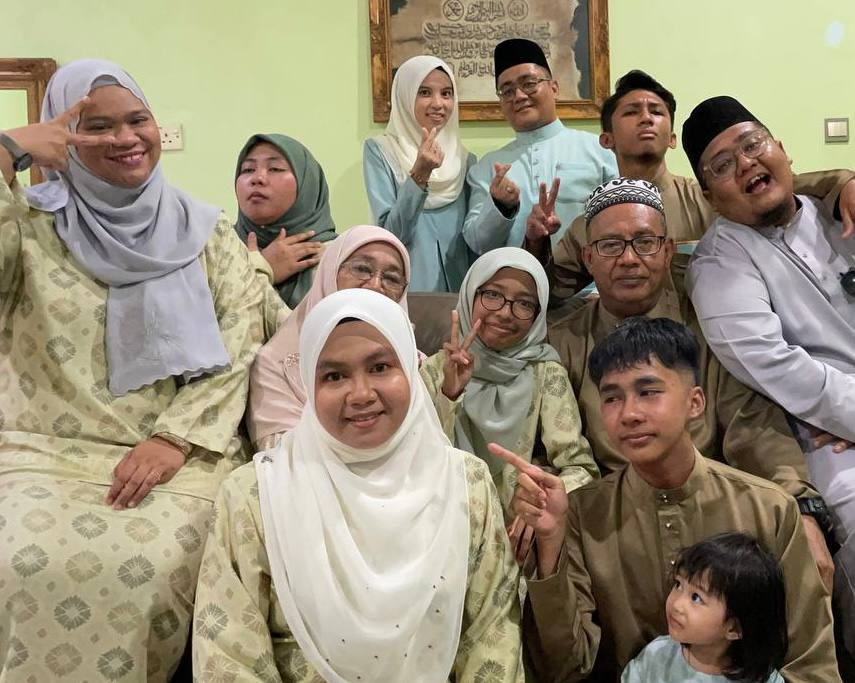
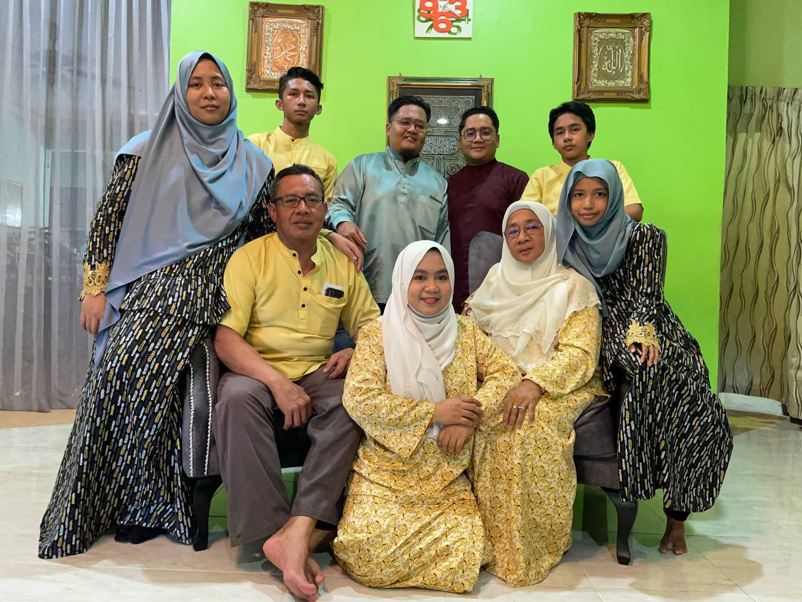

 
About My Family
Here's my proudest of Ridzuan's Family.
In the tapestry of life, my family of twelve stands as a testament to the beauty of unity. Led by my devoted parents, their love forms a foundation of strength and support. The eldest, Along and Angah, a beacon of wisdom, guides with grace. The middle siblings, Kak Fatin and Kak Farah bring vibrant energy and shared adventures, infusing joy into every moment. The yougest, Effad and Aini, full of wonder, inspire the family to embrace the simple pleasures of life.
Bound together by unbreakable bonds, this family radiates love and resilience. Laughter echoes through their home, creating cherished memories that will last a lifetime. In times of triumph or hardship, they stand as a united front, celebrating victories and providing solace in times of need.
Their story is one of compassion, growth, and unwavering support. Each member, unique in their own right, adds a distinct note to the symphony of their lives. Their harmonious melody resounds, leaving an indelible mark on the world around them.
Through their love, this family of twelve exemplifies the power of connection and the beauty of togetherness. They inspire others to cherish the bonds that bind us, reminding us that family is not merely a word, but a sanctuary where we find love, acceptance, and a place to call home.
Name:Ridzuan Bin Jahrill
Age: 59 years old
Occupation: Supervisor Technician at Tractors Petroleum Sdn. Bhd.
Name: Muhammad Muzzammil Bin Ridzuan
Age: 32 years old
Occupation: Head Chef at KakiLima Cafe, Kemaman
Status: Married to Haziqah Hassan
Name: Muhammad Khairuddin Bin Ridzuan
Age: 30 years old
Occupation: Taekwondo Instructor at Kelab Gemilang Taekwondo Terengganu
Status: Married to Fatin Hasan and gifted a cute daughter, Nur Aleesa Humaira
Name: Norfatihah Binti Ridzuan
Age: 28 years old
Occupation: Senior Architecture Engineer at Baseera Engineering Sdn. Bhd.
Name: Norfaraisyah Binti Ridzuan
Age: 25 years old
Occupation: Junior Accountant at Baseera Engineering Sdn. Bhd
Name: Muhammad Effadhrimie Bin Ridzuan
Age: 18 years old
He's currently waiting for University's Intake
Name: Nurfarahtul Aini Munawwarah Binti Ridzuan
Age: 14 years Old
Study: Form 2 at Sekolah Menengah Kebangsaan Bukit Kuang, Kemaman
{kind=link}
{kind=link}
{kind=link}
{kind=link}
{kind=link}
{kind=link}
{kind=link}
{kind=link}
{kind=link}